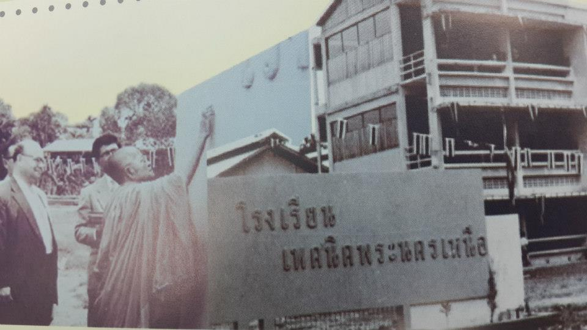

ประวัติมจพ.

ความเป็นมาการจัดตั้ง
19 กุมภาพันธ์ 2502 กระทรวงศึกษาธิการ ได้ประกาศจัดตั้งโรงเรียนเทคนิคพระนครเหนือ สังกัดกรมอาชีวศึกษา
โดยมีวัตถุประสงค์เพื่อผลิตช่างฝีมือที่เน้นการปฏิบัติและประสบการณ์จริง ซึ่งเป็นที่รู้จักกันทั่วไปในนาม
“เทคนิคไทย-เยอรมัน” ต่อมาได้มีการลงนามในสัญญาความร่วมมือทางวิชาการระหว่างรัฐบาลไทยกับรัฐบาลสหพันธ์สาธารณรัฐเยอรมันฉบับแรกในวันที่ 16
มีนาคม 2502
1 ตุลาคม 2507 กระทรวงศึกษาธิการ ได้ประกาศยกฐานะโรงเรียนเทคนิคพระนครเหนือขึ้นเป็น “วิทยาลัยเทคนิคพระนครเหนือ”
23 เมษายน 2514 มีประกาศพระราชบัญญัติสถาบันเทคโนโลยีพระจอมเกล้า พ.ศ. 2514 ให้รวมวิทยาลัยเทคนิคพระนครเหนือ
วิทยาลัยเทคนิคธนบุรี และวิทยาลัยโทรคมนาคมนนทบุรี สังกัดกรมอาชีวศึกษาเข้าด้วยกัน
เพื่อจัดตั้งเป็นสถาบันการศึกษาชั้นสูง และได้รับพระราชทานนามว่า “สถาบันเทคโนโลยีพระจอมเกล้า”
ให้เป็นสถาบันการศึกษาและวิจัย สังกัดกระทรวงศึกษาธิการ มีวัตถุประสงค์เพื่อจัดการศึกษา ทำการวิจัย
ให้บริการวิชาการและส่งเสริมทางเทคโนโลยี วิทยาศาสตร์ และครุศาสตร์อุตสาหกรรม รวมทั้งทำนุบำรุงศิลปะและวัฒนธรรมของชาติ
โดยแบ่งการบริหารงานออกเป็น 3 วิทยาเขต วิทยาลัยเทคนิคพระนครเหนือ ใช้ชื่อว่า “สถาบันเทคโนโลยีพระจอมเกล้า
วิทยาเขตพระนครเหนือ”
27 ธันวาคม 2550 มีประกาศพระราชบัญญัติมหาวิทยาลัยเทคโนโลยีพระจอมเกล้าพระนครเหนือ พ.ศ. 2550
มีผลให้สถาบันเทคโนโลยีพระจอมเกล้าพระนครเหนือเปลี่ยนสถานภาพเป็น “มหาวิทยาลัยเทคโนโลยีพระจอมเกล้าพระนครเหนือ”
เป็นมหาวิทยาลัยของรัฐที่ไม่เป็นส่วนราชการแต่อยู่ในกำกับของรัฐ
เพื่อประโยชน์ในการบริหารจัดการที่เป็นอิสระและมีความคล่องตัวสามารถจัดการศึกษาในระดับอุดมศึกษาได้อย่างมีคุณภาพและประสิทธิภาพมากยิ่งขึ้นโดยการจัดการศึกษาระดับศึกษาจะคำนึงถึงความเป็นอิสระและความเป็นเลิศทางวิชาการจนถึงทุกวันนี้